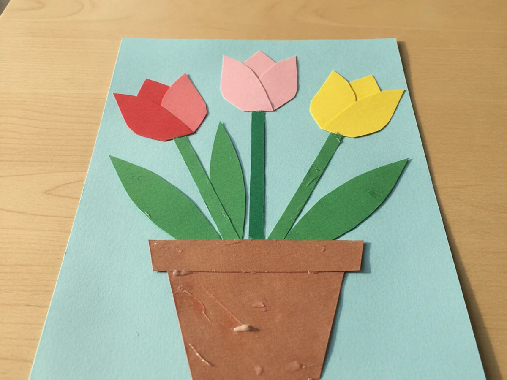
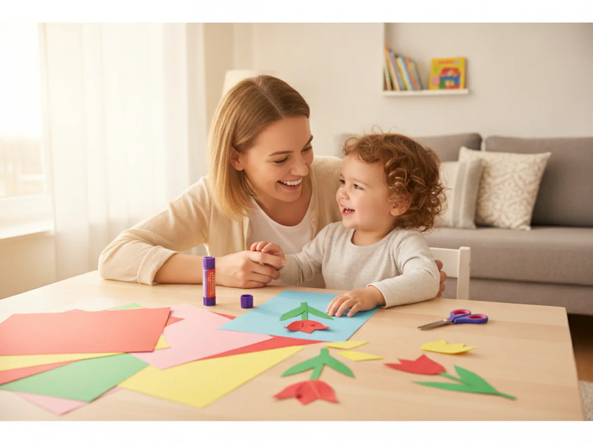
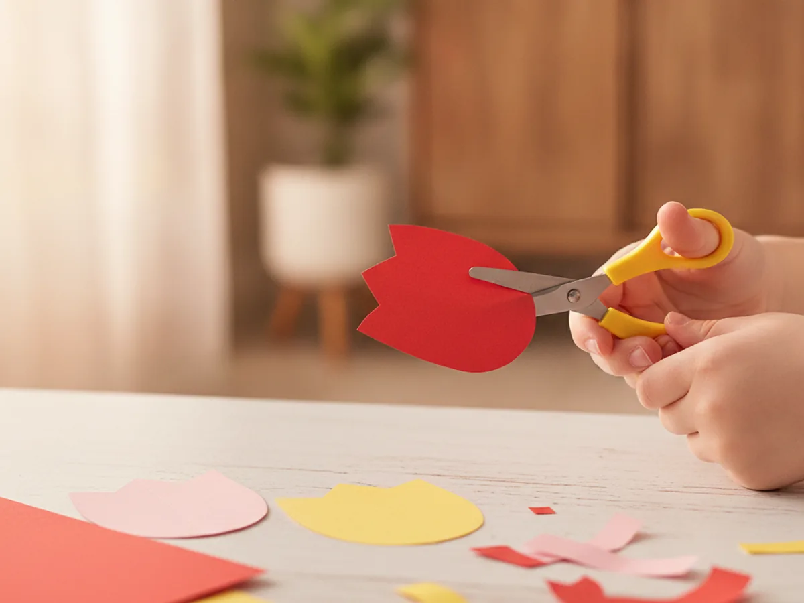
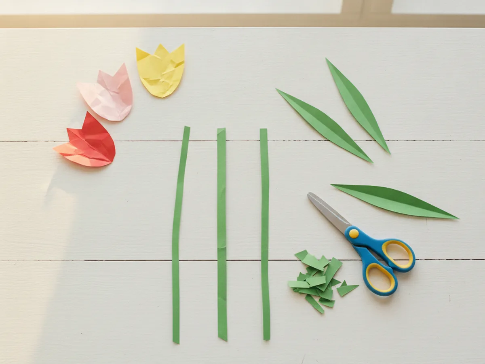
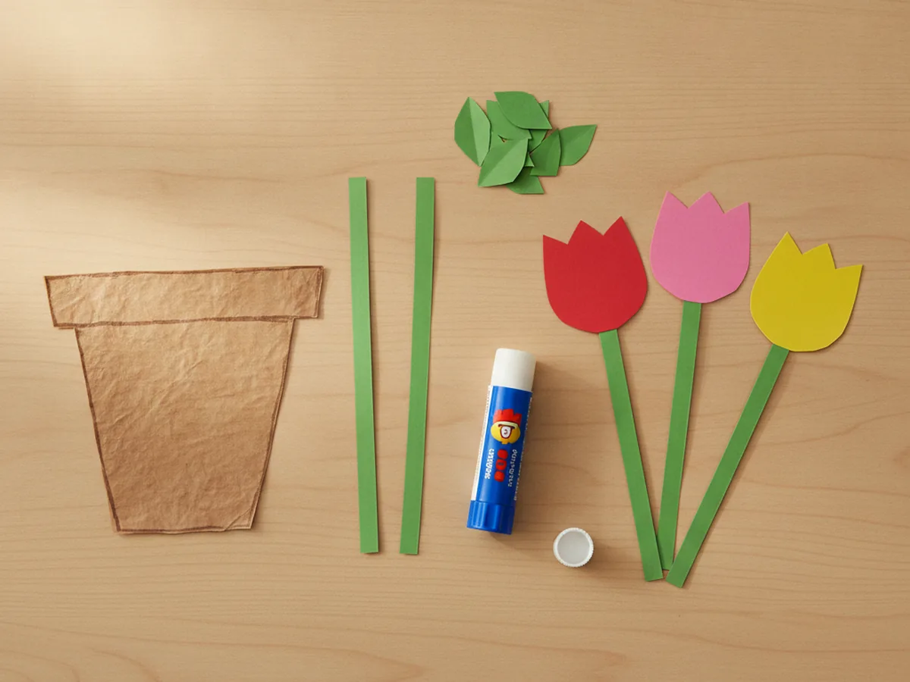
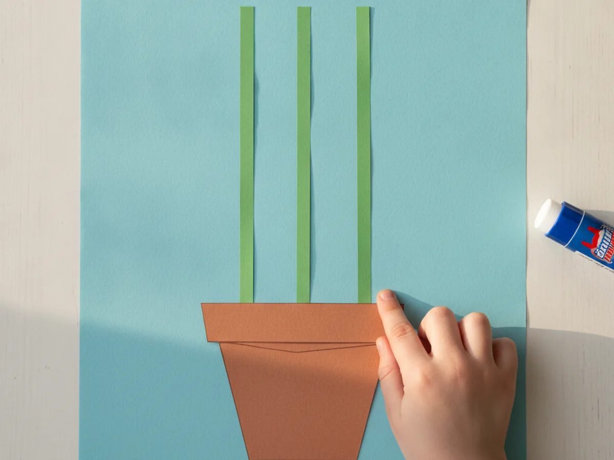
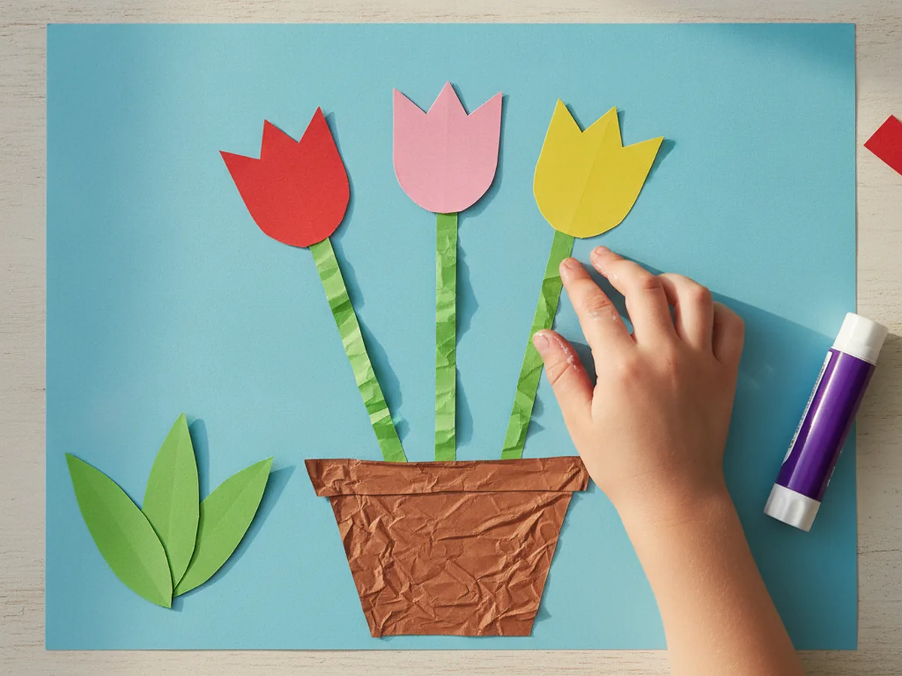
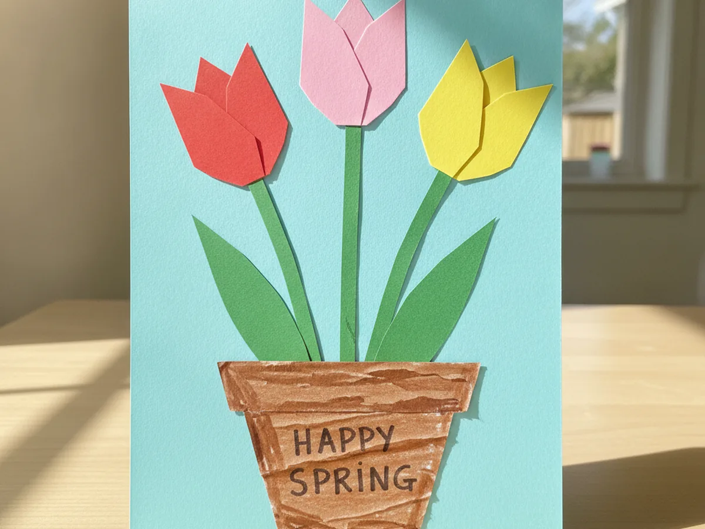

Nothing says spring quite like a row of cheerful tulips, and the best part is you do not need a garden to grow them. This paper tulip craft turns a few sheets of colorful construction paper into a sweet little flower pot picture your child can make in about half an hour. It uses simple shapes, just glue and scissors, and ends with something bright enough to hang on the fridge. Grab some paper and let's grow a paper tulip garden together right at the kitchen table!
Why Kids Love This Craft
Kids light up when they get to fill a whole picture with color, and this one lets them do exactly that. Choosing the tulip colors, snipping the shapes, and gluing each flower into place feels like real work they can be proud of. By the end, they have a cheerful bouquet that they made all by themselves, and that "look what I did" feeling is priceless. 🌷
There is gentle learning tucked into the fun too. Cutting the curved tulip tops builds scissor control and patience, while lining up the stems and pot helps with placement and planning. Picking and naming the colors is a sweet, low-key way to practice early skills without it ever feeling like a lesson.
Best of all, this paper tulip craft is wonderfully forgiving. Tulips come in every color you can imagine, so there is truly no wrong way to make one. It stays low-mess with just paper and a glue stick, which makes it an easy yes on a busy afternoon, and it works for a wide range of ages from toddlers to early grade-schoolers. Older kids can cut every shape themselves, while a toddler can simply press the pieces down where you point, so everyone gets to help at their own pace.

What You'll Need
Here is everything you need for this easy paper tulip craft, and most of it is probably already in your craft drawer.
- Construction paper, in red, pink, yellow, green, brown, and light blue for the flowers, pot, and background.
- Colored cardstock, optional, for sturdier tulips that stand up to lots of handling.
- Washable glue sticks, for sticking the flowers, stems, and pot onto the background.
- Child-safe scissors, for cutting the tulip shapes and leaves.
- Washable markers, for adding dots, a pot rim, or other fun details.
- A pencil, for lightly sketching the tulip shapes before cutting.
Step-by-Step Instructions
Ready to grow some paper flowers? Follow these simple steps and you will have a cheerful tulip pot in no time, with a few helper tips along the way.
Step 1: Cut the Tulip Blooms
Start by making the flowers, since they are the star of the show. Take a sheet of red construction paper, fold it in half, and cut out a tulip bloom shape, a rounded body with three little bumps across the top, like a small crown. Folding the paper first means you can cut two matching blooms at once. Repeat with pink and yellow paper so you have three colorful tulips for your paper tulip craft.

Step 2: Cut the Stems and Leaves
Next, give your tulips something to grow on. Cut three thin strips of green paper for the stems, making them roughly the same length so the bouquet looks tidy. Then cut several long, pointed leaf shapes, two or three for each flower. The leaves do not need to be perfect, since real tulip leaves are long and a little floppy anyway. If your child wants extra greenery, cut a few spare leaves to tuck in later, because a full, leafy pot always looks bright and cheerful.

Step 3: Cut the Flower Pot
Now make a cozy home for your tulips. Cut a flower pot shape from brown paper, a simple trapezoid that is a little wider at the top than at the bottom. If you would like, add a thin strip across the top of the pot for a rim. This little pot is what turns a few loose flowers into a finished paper tulip craft picture.

Step 4: Glue the Pot and Stems
Time to start building the picture. Lay a sheet of light blue paper down as your background, then glue the brown pot near the bottom. Next, glue the three green stems so they rise up out of the pot, spreading them out a little like a real bouquet. Press each piece down firmly so everything stays put.

Step 5: Add the Tulip Blooms
Here comes the moment your child has been waiting for. Glue a colorful tulip bloom onto the top of each green stem, letting the bottom of the flower overlap the stem just a bit so it looks connected. Press each one down and smooth it out. Suddenly your paper tulip craft looks like a real little garden in a pot.

Step 6: Add Leaves and Finishing Touches
Finish your bouquet by gluing the green leaves around the stems, angling them outward so they look like they are reaching for the sun. This is also the perfect time to add little details with markers, like dots on the pot, a sweet grassy line at the base, or a tiny sun in the corner. Step back and admire the bright spring flowers you grew together. 💐

Variations to Try
Standing Tulip Bouquet: Instead of gluing the tulips flat, tape each bloom to a green paper straw or a real drinking straw and pop them into a small cup or empty jar. This turns the craft into a 3D bouquet your child can proudly hand to grandma or set on the table.
Handprint Pot Version: Trace and cut out your child's handprint in green paper, then glue the tulips onto each fingertip so the hand becomes the stems. It is a keepsake-worthy twist that captures how little their hands are right now.
Tissue Paper Texture: Skip the flat paper blooms and let your child scrunch small squares of tissue paper into puffy tulip tops instead. It adds a soft, dimensional look and gives little fingers some extra sensory fun.
Final Thoughts
This paper tulip craft is one of those simple projects that gives back so much more than the few supplies it takes. It is quick, low-mess, and endlessly cheerful, and it brings a little burst of spring indoors no matter the weather outside. Whether you make one tulip or a whole pot full, the real magic is the time spent snipping, gluing, and chatting together. It is the kind of slow, screen-free afternoon that turns into a sweet little memory, and you end up with a keepsake to enjoy long after the glue dries.
I would love to see the bright bouquet your family grows. Snap a photo, hang it somewhere everyone can enjoy it, and most of all, savor this sweet moment with your little gardener. Happy crafting, friend! 🌼
More Crafts You'll Love
If your little one enjoyed making these tulips, these easy paper flower projects are the perfect next bloom: